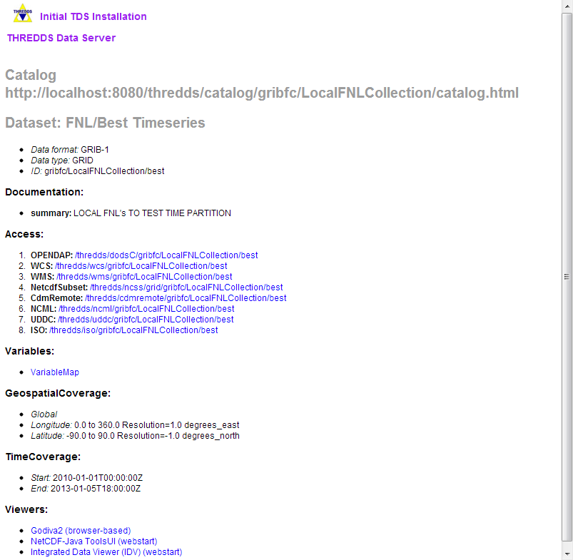
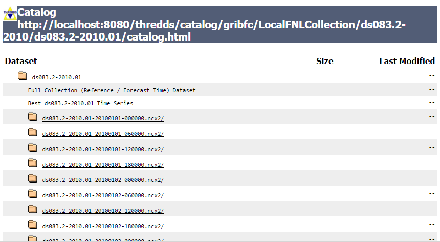
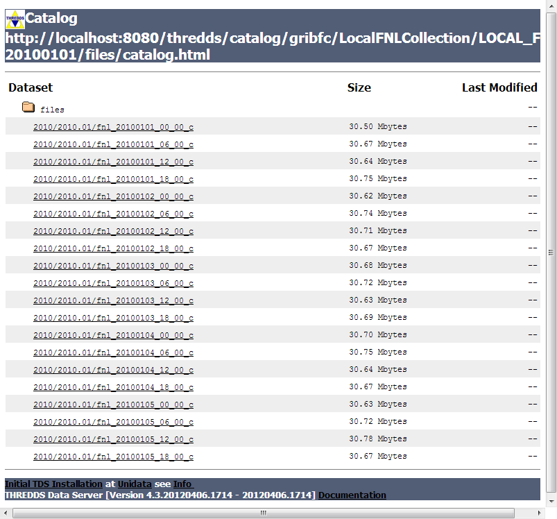

Creating a GRIB Feature Collection
Download catalogGribfc.xml, place it in ${tomcat_home}/content/thredds directory and add a catalogRef to it from your main catalog. Heres the first feature collection in it:
1)<featureCollection name="FNL" featureType="GRIB1" path="gribfc/LocalFNLCollection">
2) <metadata inherited="true">
3) <serviceName>all</serviceName>
4) <documentation type="summary">LOCAL FNL's TO TEST TIME PARTITION</documentation>
</metadata>
5) <collection name="ds083.2"
spec="/machine/tds/data/grib/fnl/**/fnl_.*_00_c$"
6) timePartition="directory"
7) dateFormatMark="#fnl_#yyyyMMdd_HH" />
8) <update startup="test"/>
</featureCollection>
- A THREDDS featureCollection is defined, of type GRIB1. All contained datasets will all have a path starting with gribfc/LocalFNLCollection.
- All the metadata contained here will be inherited by the contained datasets.
- The services to be used are defined in a compound service type called all.
- You can add any metadata that is appropriate.
- The collection of files is defined, using a collection specification string. Everything under /machine/tds/data/grib/fnl will be scanned for files with names that match the regular expression fnl_.*_00_c$
- The collection will be split into a time partition by directory.
- A date will be extracted from the filename by matching the characters after fnl_ with yyyyMMdd_HH. An example filename is fnl_20100104_12_00_c, so the date will be year 2010, month 01, day 04 and hour 12.
- Read in the collection when the TDS starts up, and test that the indices are up to date.
The resulting top level web page for the dataset looks like:

The TDS has created a number of datasets out of the GRIB collection, and made them available through the catalog interface. There is
- "Full Collection" dataset : all the data is available with two dimensions of time: a reference time, and a valid time.
- ,"Best Time series" dataset: for each valid time, use the record with the smallest offfset from the refrence time.
- "Latest Reference Time"dataset: All of the data from the latest reference time, eg latest model run.
- For each directory partition of the data, folder which you can click into, and follow the directory heirarchy. For example selecting the 2010 amd then the 2010.01 datasets:


For each seperate reference time, there is a logical dataset, each with a "Full" (two time dimensions) and "Best" dataset. Drilling down to the bottom of one of these:
You see that it has a "Best Timeseries" collection dataset as well as listing the individual files in the collection:

Here is listed all of the metadata for this dataset, as well as the possible access methods (OpenDAP, WMS, etc). This is the "HTML view" of the catalog, with URL:
http://localhost:8080/thredds/catalog/gribfc/LocalFNLCollection/ds083.2-2010/ds083.2-2010.01/ds083.2-2010.01-20100101-000000.ncx2/catalog.html? dataset=gribfc/LocalFNLCollection/ds083.2-2010/ds083.2-2010.01/ds083.2-2010.01-20100101-000000.ncx2/GCIts instructive to look at the "XML view" of the catalog, by removing the query (after the "?") and changinf the "html" to "xml:, giving this URL:
http://localhost:8080/thredds/catalog/gribfc/LocalFNLCollection/ds083.2-2010/ds083.2-2010.01/ds083.2-2010.01-20100101-000000.ncx2/catalog.xml
and this is the result:
<?xml version="1.0" encoding="UTF-8"?>You can click around in these pages to familiarize yourself with the various datasets.
<catalog xmlns="http://www.unidata.ucar.edu/namespaces/thredds/InvCatalog/v1.0" xmlns:xlink="http://www.w3.org/1999/xlink" name="ds083.2-2010.01-20100101-000000" version="1.0.1">
<service name="VirtualServices" serviceType="Compound" base="">
<service name="ncdods" serviceType="OPENDAP" base="/thredds/dodsC/" />
<service name="wcs" serviceType="WCS" base="/thredds/wcs/" />
<service name="wms" serviceType="WMS" base="/thredds/wms/" />
<service name="ncss" serviceType="NetcdfSubset" base="/thredds/ncss/grid/" />
<service name="cdmremote" serviceType="CdmRemote" base="/thredds/cdmremote/" />
<service name="ncml" serviceType="NCML" base="/thredds/ncml/" />
<service name="uddc" serviceType="UDDC" base="/thredds/uddc/" />
<service name="iso" serviceType="ISO" base="/thredds/iso/" />
</service>
<dataset name="ds083.2-2010.01-20100101-000000" ID="gribfc/LocalFNLCollection/ds083.2-2010/ds083.2-2010.01/ds083.2-2010.01-20100101-000000.ncx2/GC" urlPath="gribfc/LocalFNLCollection/ds083.2-2010/ds083.2-2010.01/ds083.2-2010.01-20100101-000000.ncx2/GC">
<documentation type="summary">Single reference time Grib Collection</documentation>
<metadata inherited="true">
<serviceName>VirtualServices</serviceName>
<dataType>GRID</dataType>
<documentation type="summary">LOCAL FNL's TO TEST TIME PARTITION</documentation>
<documentation type="Reference Time">2010-01-01T00:00:00Z</documentation>
<geospatialCoverage>
<northsouth>
<start>-90.0</start>
<size>180.0</size>
<resolution>-1.0</resolution>
<units>degrees_north</units>
</northsouth>
<eastwest>
<start>0.0</start>
<size>360.0</size>
<resolution>1.0</resolution>
<units>degrees_east</units>
</eastwest>
<name>global</name>
</geospatialCoverage>
<timeCoverage>
<start>2010-01-01T00:00:00Z</start>
<end>2010-01-01T00:00:00Z</end>
</timeCoverage>
<variableMap xlink:href="/thredds/metadata/gribfc/LocalFNLCollection/ds083.2-2010/ds083.2-2010.01/ds083.2-2010.01-20100101-000000.ncx2/GC?metadata=variableMap" xlink:title="variables" />
</metadata>
</dataset>
</catalog>